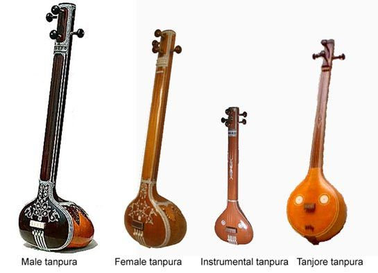

The tanpura is a drone instrument of Indian music prevalent in both the Hindustani and the Carnatic systems. It plays an important role in a concert of classical music by providing the base note (adharaswara) and by creating an aesthetic ambience on the stage. A well-tuned tanpura can emit possibly all the seven notes of the gamut. The tanpura by its function of providing a background, provides neither a specific note nor a rhythm. It creates a circle of certain pitches which by themselves do not produce a melody. Therefore, it will be more apt if we say that the tanpura creates a melodic background, but not a melody. Thus the tanpura provides a drone, i.e. adhar swara, designed to create a musical state in which an artist enjoys the fullest possible freedom to explore the different elements of the music. The continuous drone of the tanpura can also impart a musical continuity, especially to the plucked and struck instruments, which do not possess a musical continuity in their sound production. Tambora, tambura, tumbura or tamura all are synonyms of the Tanpura, which is relatively a new nomenclature given to it in Northern Indian music, wheras in Carnatic music it is still called tambura.
